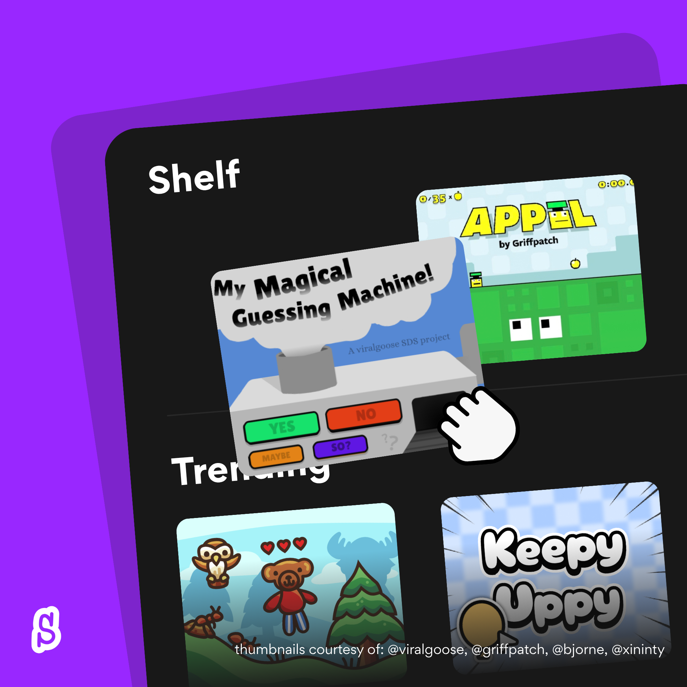

No analytics
No third-party statistics service, remote code, or analytics. Public Scratch API requests don’t send account cookies.
BetterScratch
Save projects for later, follow remix trees, and choose how Scratch looks. BetterScratch adds the tools we wanted to use ourselves.
Now available in the Chrome Web Store.
Made on Scratch
Real projects. Made by Scratchers.
See something you like? Jump in.
Finding a few projects…

BetterScratch
Save projects on your device and pick up where you left off.
Read more in the docs ↗Appearance
Start with dark mode, then make yourself comfortable. Keep the tools you use and turn off the ones you don’t.
Light · Dark · System
Orange Blue Teal
Comfortable · Compact
Reduced motion and individual feature switches
Privacy
BetterScratch doesn’t change your project files or ask for your account tokens. The Scratch editor stays untouched.
No third-party statistics service, remote code, or analytics. Public Scratch API requests don’t send account cookies.
Your shelf, banners, visit history, and public-data cache stay local. Preferences use Chrome sync. Visit history is opt-in.
Public data, badges, and individual features can be switched off. You can disable the extension whenever you like.
FAQ
Yes! Choose Add to Chrome to open BetterScratch’s listing, then select Add to Chrome in the Chrome Web Store to install it.
No. BetterScratch adds tools and styling around Scratch’s community pages. It doesn’t change project files, and editor, embed, and fullscreen routes are excluded.
Public insights read up to 40 public projects per snapshot. Larger accounts show sample coverage and lower bounds, rather than claiming complete totals. Follower activity reflects newly observed accounts in a sample, not confirmed follow dates.
No. They’re BetterScratch community recognition, not proof of identity or official Scratch endorsement. A badge’s tooltip explains why the account qualifies.
The tree shows public projects returned by Scratch and loads branches as you explore. Private or deleted projects and complete historical trees may not be available. Public-data access needs to be enabled.
Documentation
The docs cover installation, settings, and how each feature works.
Better shouldn’t cost money. That’s why BetterScratch is free.